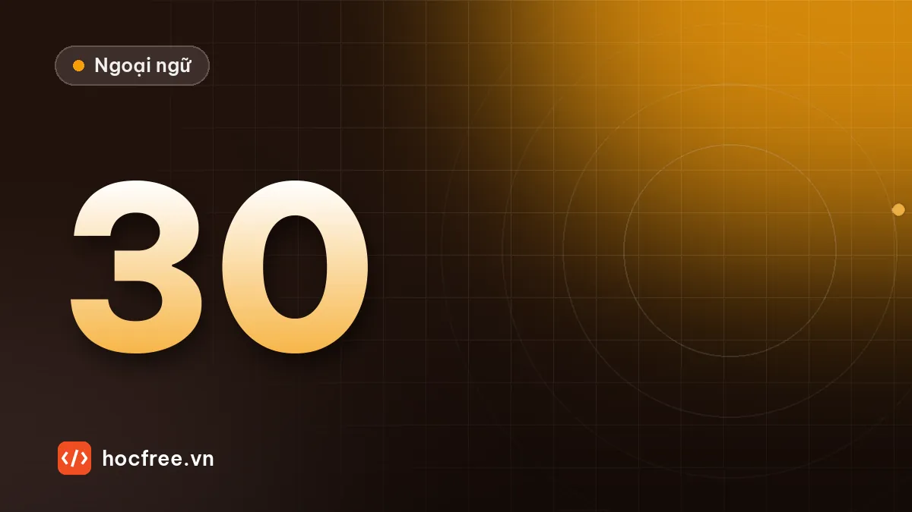

30 lỗi ngữ pháp TOEIC hay sai nhất và cách sửa
Bảng ôn tập 30 lỗi ngữ pháp người Việt hay sai trong Part 5–6, mỗi lỗi có câu sai, câu đúng, lý do ngắn và đường dẫn về bài học gốc.

Học xong bài này, bạn sẽ
- Ôn nhanh 30 điểm ngữ pháp hay ra
- Tự kiểm tra bằng câu ví dụ đúng/sai
- Biết điểm nào cần xem lại bài gốc
Nên học trước: Kế hoạch 4 tuần luyện đề
Nội dung bài viết
Đây là bảng ôn tập dùng trong tháng luyện đề: 30 lỗi ngữ pháp người Việt hay sai nhất trong Part 5–6, gom từ toàn bộ chặng 2, 4 và 5. Mỗi lỗi có câu sai, câu đúng, lý do ngắn gọn và liên kết về bài học gốc. Cách dùng: che cột "Câu đúng", tự sửa câu sai. Lỗi nào sửa không được hoặc không giải thích được, hãy mở bài gốc học lại.
Từ loại và cấu trúc câu
| # | Câu sai | Câu đúng | Lý do |
|---|---|---|---|
| 1 | The process remains efficiently. | The process remains efficient. | Sau động từ nối (remain, seem, become) là tính từ |
| 2 | She has recent been promoted. | She has recently been promoted. | Giữa trợ động từ và động từ là trạng từ |
| 3 | We received a significantly increase. | We received a significant increase. | Trước danh từ là tính từ |
| 4 | Thank you for your timely. | Thank you for your timely reply. | timely là tính từ, cần danh từ theo sau |
| 5 | The applications will be interviewed. | The applicants will be interviewed. | Người được phỏng vấn, không phải lá đơn |
| 6 | We discussed about the budget. | We discussed the budget. | discuss là ngoại động từ, không cần giới từ |
Bài gốc: từ loại và vị trí, hậu tố, cấu trúc câu.
Thì và hòa hợp
| # | Câu sai | Câu đúng | Lý do |
|---|---|---|---|
| 7 | She works here since 2020. | She has worked here since 2020. | since → hiện tại hoàn thành |
| 8 | We have sent it two days ago. | We sent it two days ago. | ago → quá khứ đơn |
| 9 | I'll call you when he will arrive. | I'll call you when he arrives. | Mệnh đề thời gian tương lai dùng hiện tại đơn |
| 10 | The package is containing two items. | The package contains two items. | Động từ trạng thái không dùng tiếp diễn |
| 11 | The quality of the products have improved. | The quality of the products has improved. | Chủ ngữ là quality (số ít) |
| 12 | The number of orders have doubled. | The number of orders has doubled. | The number of → số ít |
| 13 | The informations are attached. | The information is attached. | information không đếm được |
| 14 | Each of the rooms have a projector. | Each of the rooms has a projector. | Each of → số ít |
Bài gốc: thì hiện tại, quá khứ và tương lai, hòa hợp.
Bị động, to V, V-ing
| # | Câu sai | Câu đúng | Lý do |
|---|---|---|---|
| 15 | The accident was occurred at noon. | The accident occurred at noon. | Nội động từ không có bị động |
| 16 | All visitors require to wear helmets. | All visitors are required to wear helmets. | Khách bị yêu cầu → bị động |
| 17 | We look forward to hear from you. | We look forward to hearing from you. | to ở đây là giới từ |
| 18 | He suggested to postpone the meeting. | He suggested postponing the meeting. | suggest + V-ing |
| 19 | The company decided expanding. | The company decided to expand. | decide + to V |
| 20 | Please read the attaching file. | Please read the attached file. | File được đính kèm → V3 |
| 21 | The customers were disappointing. | The customers were disappointed. | Người cảm thấy → -ed |
Bài gốc: câu bị động, to V, V-ing, phân từ.
Từ nối, mệnh đề, so sánh, điều kiện
| # | Câu sai | Câu đúng | Lý do |
|---|---|---|---|
| 22 | Despite the price is high, sales are good. | Although the price is high, … / Despite the high price, … | Despite + danh từ; Although + mệnh đề |
| 23 | Because of the rain was heavy, … | Because the rain was heavy, … | Because of + danh từ |
| 24 | Submit the form until Friday. | Submit the form by Friday. | Hạn chót → by |
| 25 | The man which called you is my boss. | The man who called you… | Người → who |
| 26 | Customers who orders exceed $100… | Customers whose orders exceed $100… | Sở hữu, theo sau là danh từ → whose |
| 27 | This is the tool what we need. | This is the tool that we need. | Có danh từ trước → that / which |
| 28 | Prices are very lower this year. | Prices are much lower this year. | very không đi với so sánh hơn |
| 29 | If we will receive the parts, we will start. | If we receive the parts, we will start. | Mệnh đề if loại 1 dùng hiện tại |
| 30 | The manager requested that she submits the report. | …requested that she submit the report. | Giả định sau request that → V nguyên mẫu |
Bài gốc: liên từ, giới từ, mệnh đề quan hệ, so sánh, điều kiện và giả định.
Kiểm tra nhanh 10 câu
Mỗi câu dưới đây có một lỗi. Tìm và sửa trong 5 phút.
(1) The new equipments will arrive on Monday. (2) Ms. Ha has joined the company in 2019. (3) Although the delay, the project finished on time. (4) The marketing team is responsible to the campaign. (5) Every employees must attend the training. (6) The meeting will be taken place in Room 3. (7) She is interesting in the new position. (8) Should you needing help, call us. (9) It is the most cheapest option. (10) The supplier, that is based in Hai Phong, offers free delivery.
Xem đáp án
- equipments → equipment (không đếm được).
- has joined → joined (in 2019 → quá khứ đơn).
- Although → Despite (theo sau là danh từ).
- responsible to → responsible for.
- Every employees → Every employee.
- will be taken place → will take place.
- interesting → interested.
- needing → need (đảo ngữ Should + S + V nguyên mẫu).
- most cheapest → cheapest.
- that → which (sau dấu phẩy không dùng that).